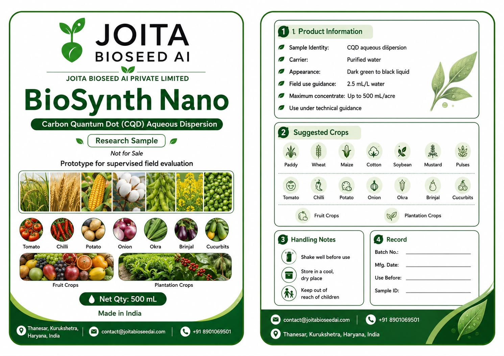
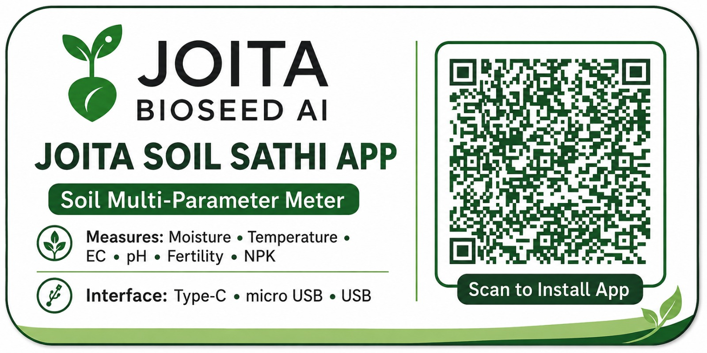

AI Advisory
AI-guided recommendations for farmers and field teams.
AI in agriculture. Biological inputs in the field. Better decisions for farmers.
JOITA Bioseed AI combines AI, biological crop inputs, and field data to help farmers make better decisions, reduce input waste, and grow climate-resilient crops.
Check aphids, leaf curl, irrigation stress, flowering nutrition, and local label-safe spray guidance with KVK confirmation.
Flowering
Waste-aware
Pilot-ready
Simple pillars. Practical decisions. Less noise for farmers.
AI-guided recommendations for farmers and field teams.
Designed to support crop resilience and reduce input waste through better timing.
Field validation in progress through plots, FPOs, and farmer feedback.
A clean decision loop for smallholder agriculture.
Read crop stage, weather context, stress signals, and farmer observations.
Recommend the right biological input, timing, and follow-up action.
Support field application and record response for validation.
Biology, AI, soil-water resilience, edge sensing, seed support, aquaculture, and soil diagnostics in a sharper product portfolio built for pilots, partners, and farmer-facing deployment.
Waste-to-wealth FA-WAP hydrogel concept using rice stubble, fly ash, and Bacillus subtilis under field validation.
Biological crop input platform designed to support crop resilience and smarter application timing.
Public farmer assistant for crop questions, disease support, weather context, and local field records.
Seed and nursery support material built for early establishment and field usability.
Aquaculture support concept for water-quality pilots and validation-led deployment.
Design-protected sensing and edge-computing node for root-zone intelligence and FarmAssist sync.
Scan-to-install companion for soil multi-parameter readings: moisture, temperature, EC, pH, fertility, and NPK.
Customer-facing tools now connect product identity, crop evaluation, soil readings, and app-based records into one field-ready launch workflow.
BioSynth Nano is presented as a Carbon Quantum Dot aqueous dispersion research sample for prototype, supervised field evaluation across major field, vegetable, fruit, and plantation crops.

The Soil Sathi workflow supports field teams using a soil multi-parameter meter for moisture, temperature, EC, pH, fertility, and NPK readings.

Choose paddy, wheat, maize, cotton, soybean, mustard, pulses, tomato, chilli, potato, onion, okra, brinjal, cucurbits, fruit crops, and plantation crops for supervised evaluation.
Record soil moisture, temperature, EC, pH, fertility, and NPK with Soil Sathi before application.
Use BioSynth Nano only under technical guidance, with labelled samples and farmer/FPO records.
Use FarmAssist and field notes to compare crop response, input timing, and next-season recommendations.
Scientific tools designed for real rural conditions.
Designed to support climate-stressed crops.
Helps reduce input waste through better timing.
Built for farmers, FPOs, and field workers.
Records observations before responsible scale-up.
One platform. Multiple routes to field adoption.
Simple advisory, crop-stage support, and biological input timing.
Demonstration plots, training, and field validation records.
Climate-agriculture platform with product, advisory, and proof layers.
Research, distribution, aquaculture pilots, and international validation.
Work on AI, agronomy, app development, field validation, nano-biotech, bioinformatics, design, and business development.
Request a pilot, explore FarmAssist AI, or partner with JOITA.